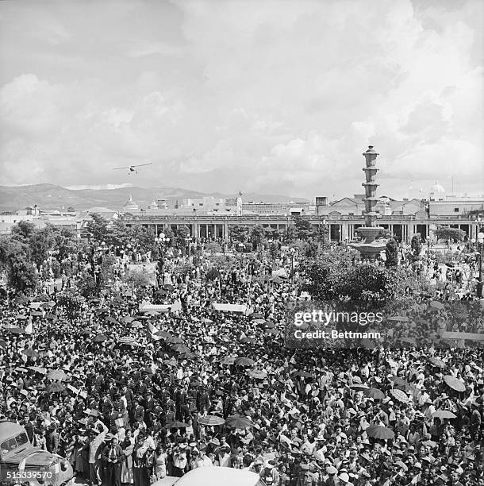

Revolução da Guatemala
Reformas
A reforma agrária desapropriou terras não cultivadas de grandes latifúndios e as redistribuiu aos trabalhadores agrícolas
O governo de Jacobo Árbenz, líder militar progressista da revolução, continuou as reformas de Arévalo.
As reformas sociais visavam modernizar o campo, criar um mercado interno e desenvolver a indústria nacional.
Contexto
A revolução foi deflagrada por meio de protestos urbanos.
Ela ocorreu no contexto da Guerra Fria, e foi fortalecida pela vitória dos aliados na Segunda Guerra Mundial.
A revolução inaugurou uma década de mudanças, incluindo uma reforma agrária.

A HISTÓRIA
A Revolução da Guatemala ocorreu entre a Revolta popular que derrubou o ditador Jorge Ubico em 1944 e o golpe de Estado em 1954 orquestrado pelos Estados Unidos que removeu o presidente Jacobo Arbenz do poder. A revolução ficou conhecida como 10 ANOS DE PRIMAVERA, pois representou para muitos uma década dos únicos anos de democracia.
O governo da Guatemala queria fortalecer a econômia do pais, para isso, ele apoiou a exportação de café, o que gerou a desapropriação de indigenas de suas terras.
Introdução
A Guerra Civil da Guatemala durou 36 anos, de 1960 a 1996.
Foi um conflito entre o governo guatemalteco e grupos guerrelheiros de esquerda.
A Guerra causou mais de 200 mil mortes, com muitas vítimasindígenas.
Causas e conflitos
Desiguldade social:
A maioria da terra e riqueza estava nas mãos de poucos.
Interferências dos EUA:
O golpe de 1954, apoiado pelos EUA, derrubou o presidente Jacobo Árbenz, que tentava reformar a distrubuição de terras.
Influencia da Guerra Fria:
O governo era apoiado pelos EUA, enquanto os guerrelheiros tinham inspiração socialista/comunista.
Pincipais grupos envolvidos
Exército da Guatemala:
Defendia o governo e era apoiado pelos EUA.
Guerrilhas de Esquerda:
Lutavam por reformas sociais e eram formadas por camponese, estudantes e indígenas
População indígena:
Muitas comunidades indígenas foram vítimas de violência.